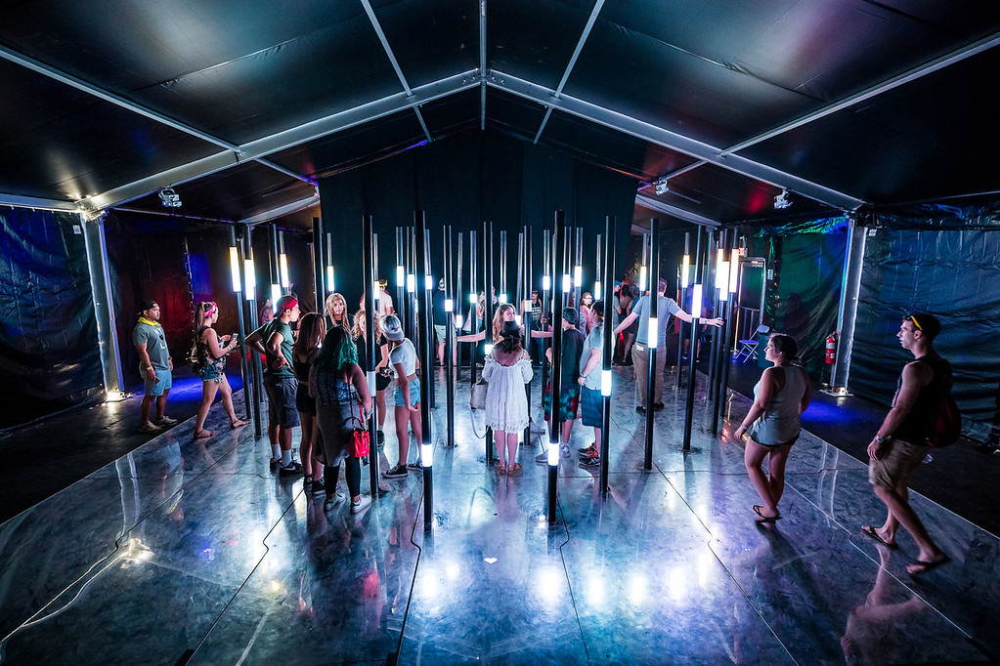

The mechanics behind Heartfelts are simple! As participants navigate freely through a “maze” of 32 light poles they’re prompted to use their bodies as conductors to close a circuit triggering light animations visualizing connections between each other. It was tons of fun watching people come together to illuminate the entire structure at the same time. The music festival also opened up opportunities for participants to explore the connection between their bodies, music, space and light
The stellar team: Ekene Ijeoma (concept), Adam Paikowski (software solution), Jeian Jeong (installation), Gentry Demchak (hardware solution), Mischa Abakumova (hardware solution)